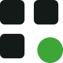

onia — elegir isotipo
Aprobado — wordmark v1 (monolínea, wordmark.svg). Acá se elige SOLO el símbolo que lo acompaña.
Los 3 candidatos
E — "canal"
Superelipse sólida partida por un canal diagonal a 24°: la plataforma sólida atravesada por el flujo que la automatiza. Masa + vacío, familia Ramp/Stripe.
F — "campo modular"
Tres cuadrados en tinta + un círculo verde que se desplaza fuera del grid: los módulos (ERPs) y la inteligencia de naturaleza distinta que se mueve sola.
G — "órbita"
Dos arcos de radios DISTINTOS que se persiguen (210° c/u, desfasados 180°): orquestación en movimiento continuo, 24/7. Dos radios, cero barras.
Isotipo — claro
E · isotipo-e.svg
F · isotipo-f.svg
G · isotipo-g.svg
Isotipo — oscuro
E · el verde vive solo sobre oscuro
F · tinta → papel, verde fijo
G · tinta → papel, verde fijo
Monocromo — tinta pura (el gate: sin color debe seguir siendo él)
E mono
F mono · el círculo se distingue por silueta
G mono
Negativo — blanco sobre verde (§4.3: sobre verde, sin verde)
E negativo
F negativo
G negativo
Tamaños 16 / 32 / 64 (el archivo real, sin trampa)

Favicon — baldosa de prueba en pestaña (16 / 32 / 64)
Lockup completo — wordmark v1 aprobado + isotipo candidato
E + onia
F + onia
G + onia